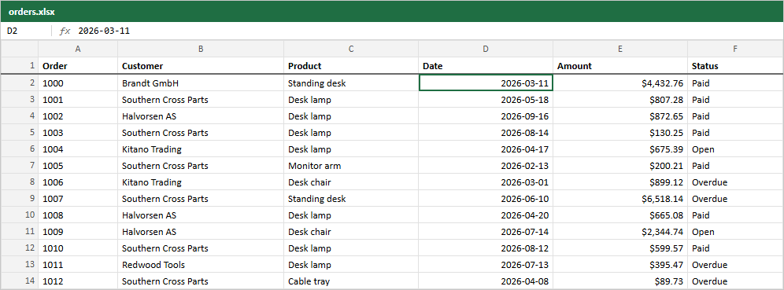

DocsExcel
Export to Excel

exportXlsx writes a real .xlsx workbook, not a CSV renamed. What you get in Excel:
- Numbers and dates are typed cells, so they sort, filter and sum. A
Datevalue becomes an Excel date; the image shows one selected. - The header row is bold and frozen.
- Column widths follow the widths on screen.
- Hidden columns are left out, pinned columns are frozen, groups become outline rows with
SUBTOTALformulas.
import { exportXlsx } from "rowpine"
await exportXlsx(table, { fileName: "orders", sheetName: "Orders" })| Option | What it does |
|---|---|
sheetName |
Worksheet name. Default Sheet1. |
groupFill |
Fill of group rows. Default #f4f4f5; ExportMenu uses your theme's --muted. |
Plus the shared options: fileName, rows, rowStyle, download.
Dates stored as strings#
A date only becomes an Excel date when the cell value is a Date. If your data has ISO strings, convert them in the accessor (accessorFn: (r) => new Date(r.date)), or they export as text.
Was this page helpful?
Thanks. To tell us more, write to support@jqwidgets.com.